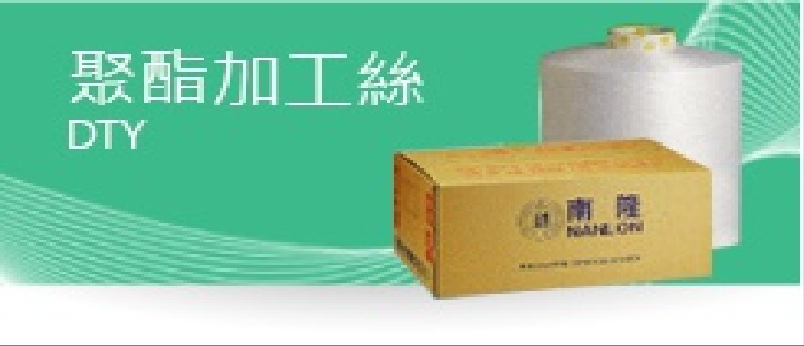
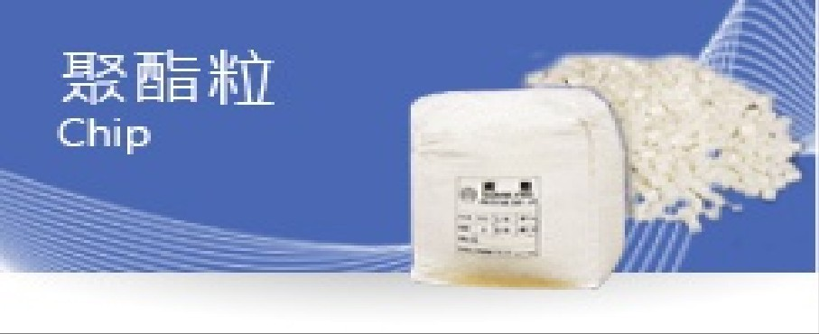
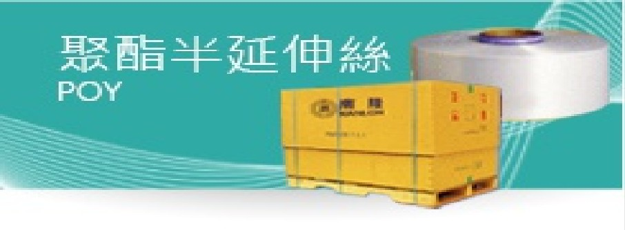

聚對苯二甲酸乙二醇酯纖維，具有高的壓縮彈性，抗皺 (polyester fiber) 性、耐熱性、耐光性及耐化學穩定性。可提供作為短纖紡紗、不織布、填充…等產業用途

各式機能性與共聚改質酯粒，可提供做為各式聚酯類維或其他應用等製造用原料。
棉紗產品種類涵蓋了天然纖維原料的縲縈紗、對環境友善的環保紗、雪花狀布面呈現的交絡紗、不易起毛球的低毛羽紗、回復性及親膚性佳的彈性紗和不規則粗細變化竹斑狀布面的斑節紗。

陽離子可染型(CD)與各種丹尼/條數規格，並有一般性、特殊機能性、功能性等多樣產品。可提供做為假撚廠DTY或其他應用等製造用原料。
聚對苯二甲酸乙二醇酯纖維，具有高的壓縮彈性，抗皺 (polyester fiber) 性、耐熱性、耐光性及耐化學穩定性。可提供作為短纖紡紗、不織布、填充…等產業用途